Design Thinking
Design Thinking:
1. Emphasize
Before building my website, I observed many other people's websites and found that their websites had a common feature: they had interactive elements
and intuitive elements.
For example, the official web of SpaceX is full of interactive elements
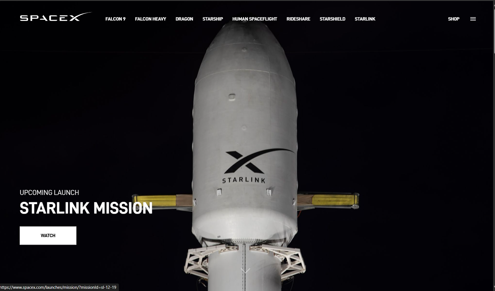
This inspired me. I added many interactive elements and pictures into the design of the planned web to make the website convey information to visitors more clearly
2. Define
I have clarified the purpose of the website: to introduce myself.
Therefore, I need to build the website around this purpose.
From the user's perspective, I have learned that users don't like having too many elements on the homepage. Meanwhile, in order for them to know "where they are", I need to create a clean navigation bar
From the user's perspective, I have learned that users don't like having too many elements on the homepage. Meanwhile, in order for them to know "where they are", I need to create a clean navigation bar
3. Ideate
Next, I began to envision how my website should be created.
At this point, I didn't explicitly establish a structure. Instead, I remembered the necessary elements and then considered how to implement them.
Finally, I decided to use the button to switch pages and other methods to achieve the purpose of interactive elements.
4. Prototype
I roughly created the basic structure of css, three html (goals, index and design), and Javascript files.
I also incorporated the button into the code
Also, I made much effort on making the website suitable for everyone to watch.
I used different fonts and size to make the letter seem different.
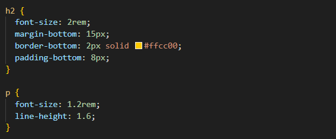
I also incorporated the button into the code
Also, I made much effort on making the website suitable for everyone to watch.
I used different fonts and size to make the letter seem different.
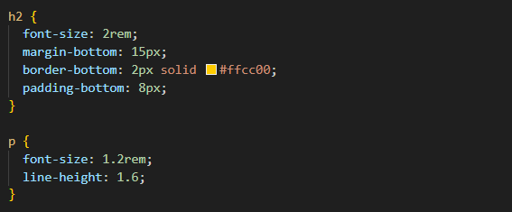
And the result can be shown like that👇
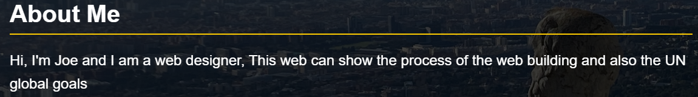In addition, I added mant photos to make the page seems more USER-FRIENDLY
5. Test
After completing these productions, I ran the program and asked my friends and classmates for suggestions.
After that, I improved the size and transparency of the font. Then, I added the background and animations.
This is a big challenge for me.
My code for background: 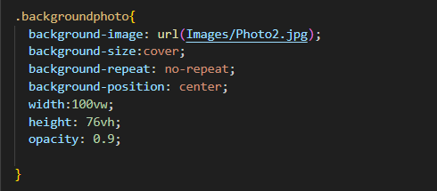 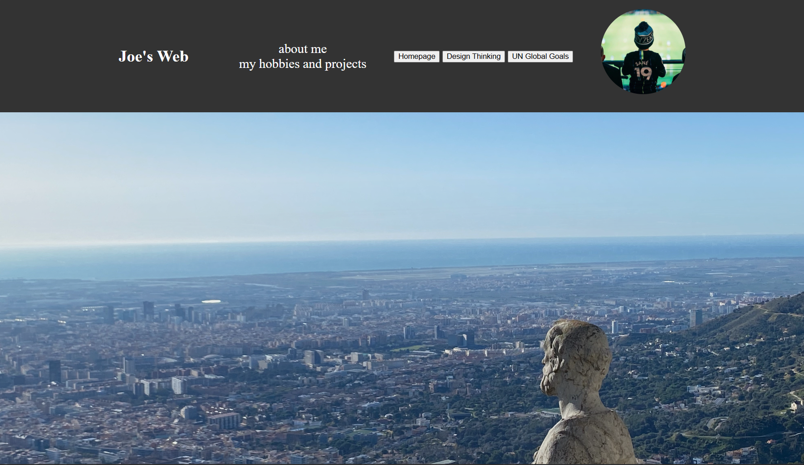 My code for animations: 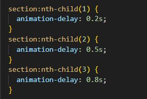
My code for background: 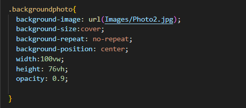 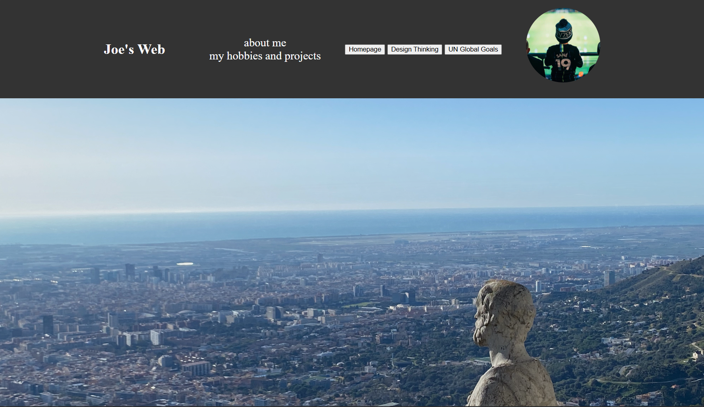 My code for animations: 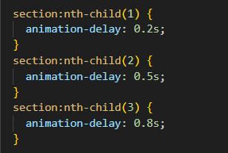
These code show the fade-in and upshift animation of the page
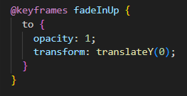This piece of code defines the step-by-step change process of the animation
6. Accessibility Statement
I tried my best to highlight the important parts and replaced the questions with pictures to achieve barrier-free reading
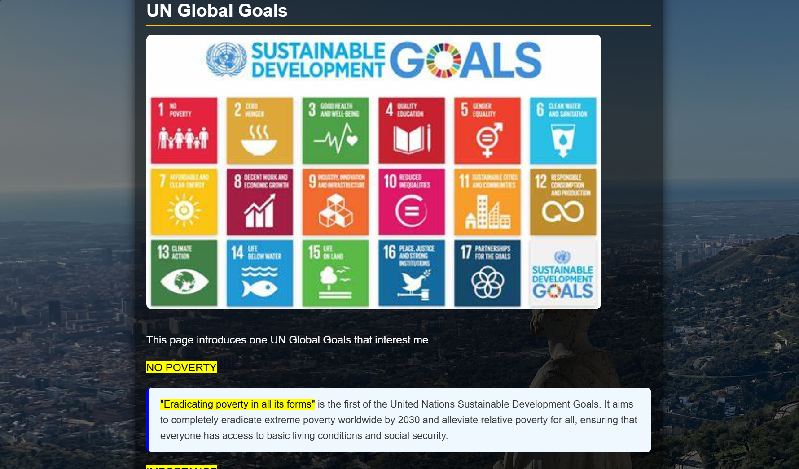